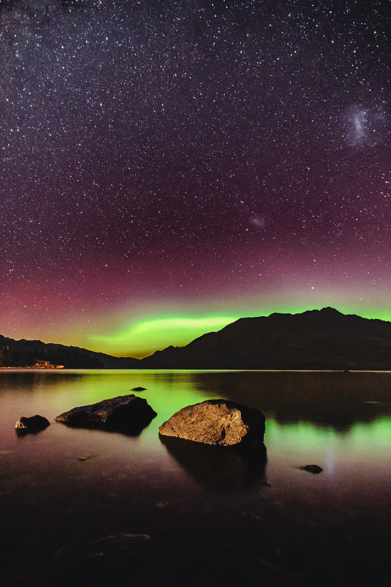
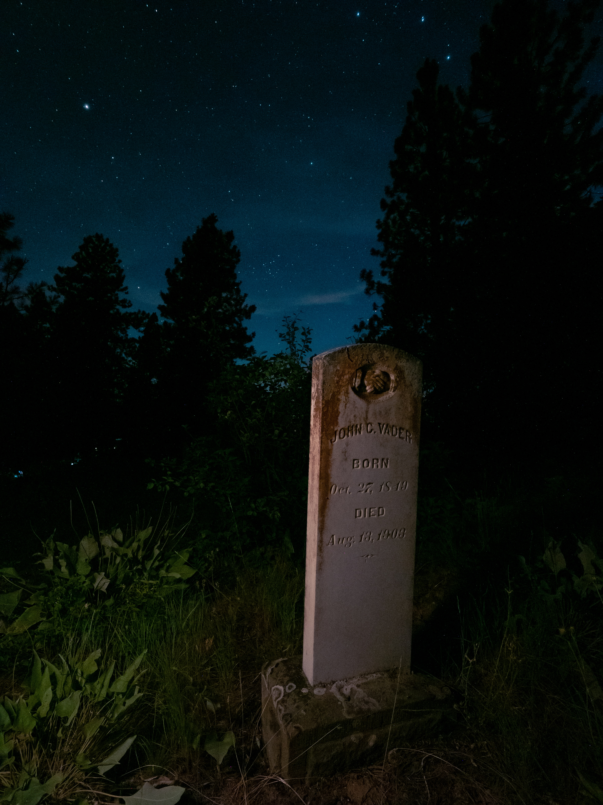
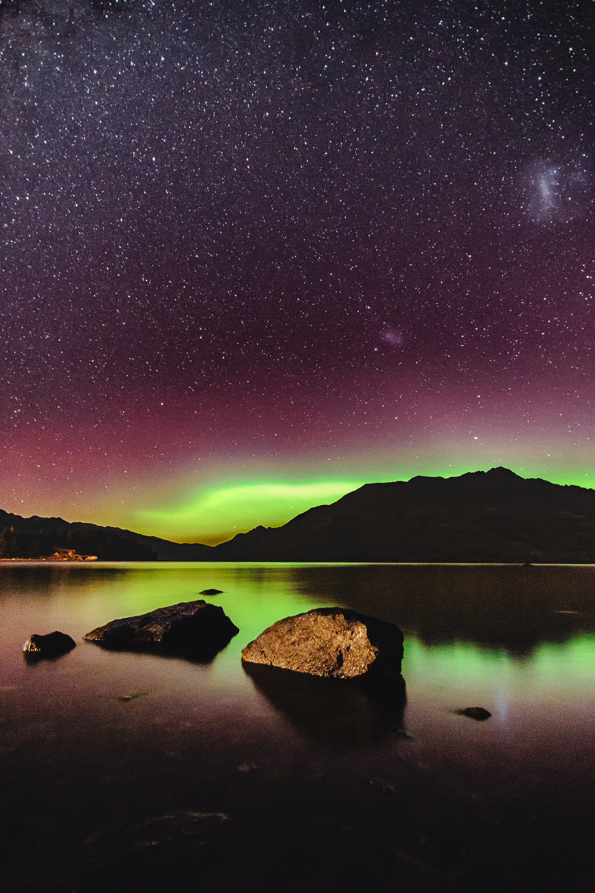
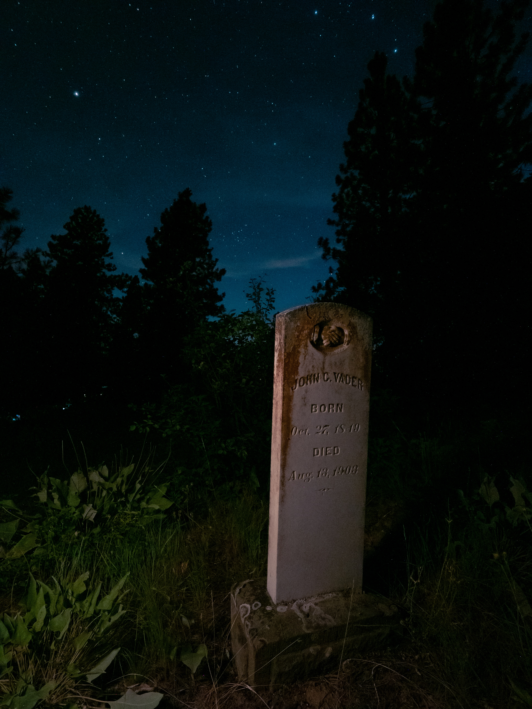

What is Astrophotography?
Astrophotography captures the beauty and wonder of the night sky, including stars, planets, and galaxies. It
often requires specialized equipment and techniques to capture these celestial objects. It is a popular genre
of photography and is enjoyed by both amateurs and professionals alike.
How to Get Started in Astrophotography
Getting started in astrophotography can be a bit daunting, but it doesn't have to be. With a few basic tips
and some practice, you can start capturing stunning images of the night sky. Some tips to get you started
include:
- Research the best locations for astrophotography in your area
- Invest in a good quality camera and lenses
- Use a tripod to keep your camera steady
- Use manual focus and a high ISO to capture stars
- Consider using stacking software to enhance your images
Examples of Stunning Astrophotography
Here are some examples of stunning astrophotography:


 


